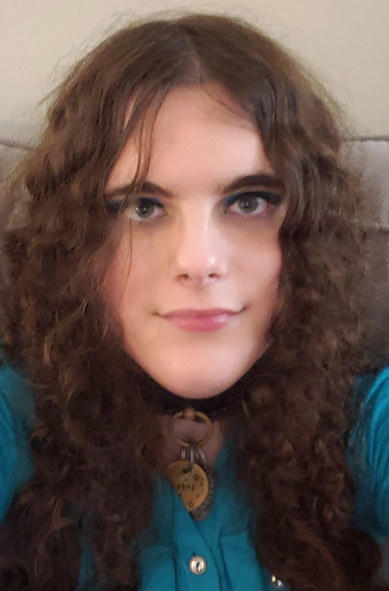

About Me

My Writing
My main passion is writing, particularly fantasy and romance. I have been making up worlds and stories since I was a child, and I don't ever want to stop. I write short stories, but I also want to write novels. I have had a longer story I have been working on since I was a teenager, which I have a very Tolkien-esque approach to. I have made languages, maps, history, religion, philosophy and so much more for the world of Maeleron, and I hope one day to see the story that takes place there on store shelves.
My Photography
My other big passion is photography, specifically film photography. I am currently experimenting with setting up a darkroom space for myself, and intend to expand out to larger formats and colour in the future. I love telling stories of a different kind with my photos. I can say so many interesting things that I cannot possibly do with words in a single photo. The angle, lighting, posing, they all play into how one interprets the ideas I try to express, and I love hearing how other people see my art.
Doctor Who
Once someone has met me, it is hard to not learn that I am obsessed with the British sci-fi show "Doctor Who". I am a particular fan of the Fourth Doctor as portrayed by Tom Baker, and I have several large ongoing fan projects of considerable size related to my obsessions. My Fourth Doctor Scarf Compendium is perhaps the largest of these, being an already over 100 page research project related just to the various scarves worn by The Fourth Doctor on the show. In accordance with my English learning at KPU, it is fully referenced, with 12 pages already filled with citations.
Everything Else
I am a woman of many talents, with my list of hobbies including: Knitting, sewing, fashion, cooking, graphic design, Taekwondo(which I have a black belt in), coding, and so much more. As you can see, I like to be able to do a lot of things very well, so I can never just stop at one thing. Along with all my main passions, you will find in my blogs various small detours into these and other areas as I go about living the life only I can have.